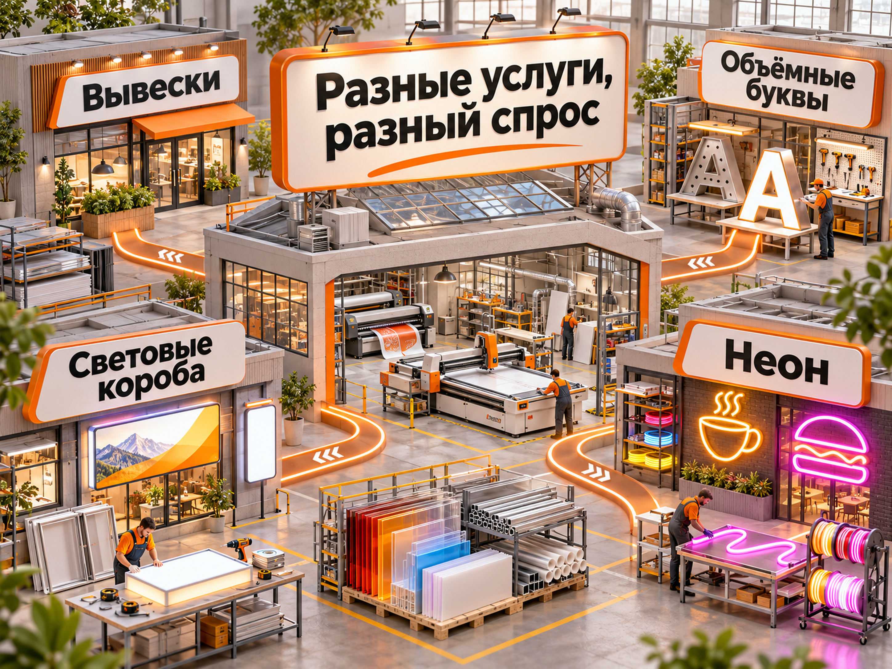
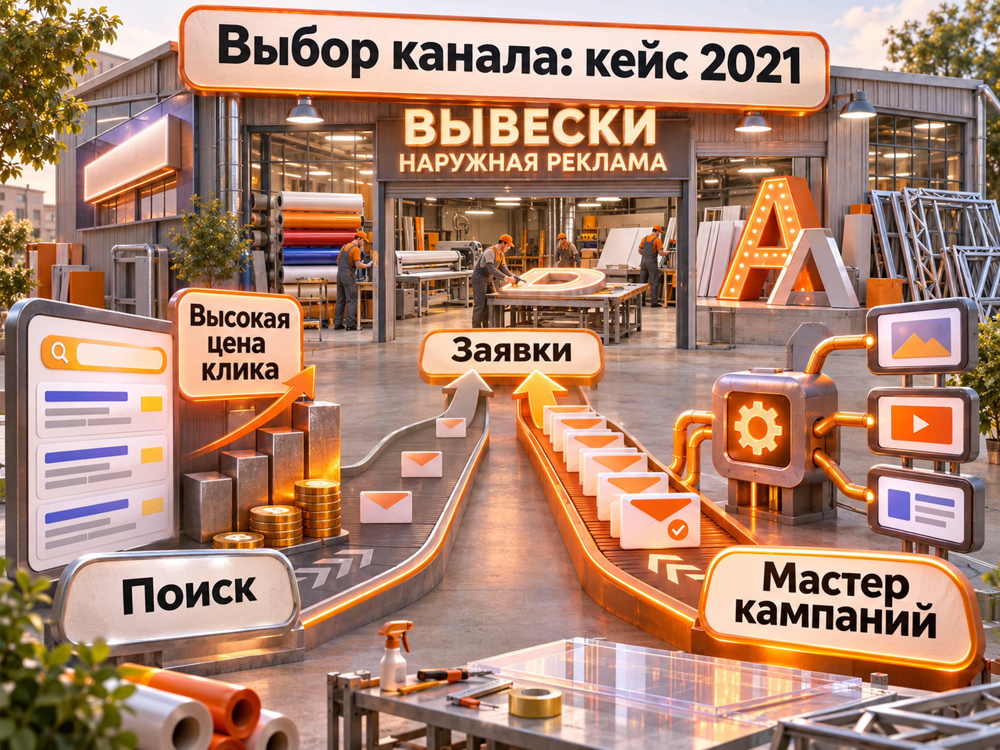
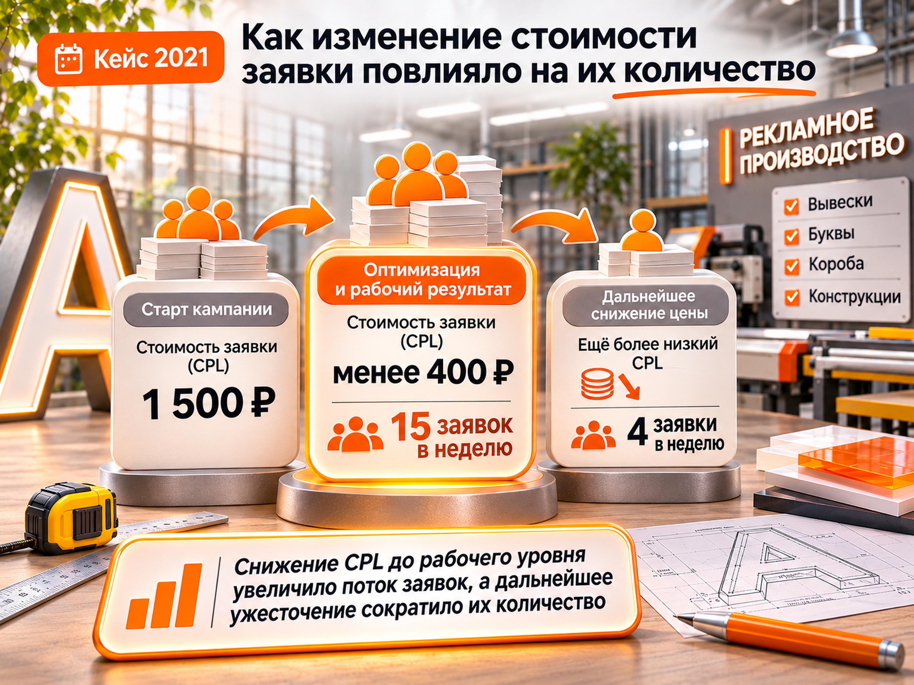

Блог о платном трафике
Продвижение рекламного производства: как получать заявки на вывески и наружную рекламу
Чтобы получать заказы на изготовление вывесок, рекламному производству стоит продвигать конкретные изделия, а не только общую услугу «наружная реклама». Для объёмных букв, световых коробов, неона и оформления фасадов различаются поисковые запросы, ожидания заказчиков и экономика заказа. Отсюда и рабочая связка: понятное предложение, реклама под выбранное направление, фотографии готовых работ и быстрый запрос расчёта.
Один из основных платных инструментов здесь - Яндекс Директ. Но запускать отдельную поисковую кампанию по каждому виду продукции автоматически не стоит. У производства с небольшим средним чеком стоимость поискового клика может оказаться слишком высокой. Я сталкивался с этим в проекте по изготовлению наружной рекламы в Москве: нужную стоимость обращения удалось получить с помощью Мастера кампаний после неудачных тестов отдельных кампаний на Поиске и в РСЯ.
Как продвигать рекламное производство
Выбор канала зависит от того, кто нужен компании: покупатели одной вывески, сетевые заказчики с несколькими объектами или партнёры, размещающие регулярные заказы. Для них различаются и сообщения в рекламе, и посадочные страницы.
| Канал | Когда использовать | Что проверить до запуска |
|---|---|---|
| Яндекс Директ, Поиск | Есть прямые запросы на изготовление конкретных изделий | Хватает ли маржи заказа, чтобы оплачивать клики в поисковом аукционе |
| Мастер кампаний | Нужен автоматизированный подбор аудитории и площадок, а бюджет ограничен | Насколько точно сформулированы предложение и цель, какие заявки приходят |
| РСЯ и ретаргетинг | Есть качественные изображения работ и аудитория для повторного контакта | Отличаются ли реальные заказы от дешёвых, но бесполезных обращений |
| SEO | Компания работает вдолгую и предлагает несколько самостоятельных видов изделий | Есть ли страницы услуг, фотографии, описания материалов и география работы |
| Яндекс Карты | Заказчикам важны местное производство, замер и монтаж | Заполнена ли карточка, актуальны ли услуги, фотографии и контакты |
Эти каналы не обязательно запускать одновременно. Если сайт не показывает примеры работ и не позволяет быстро запросить расчёт, дополнительный трафик лишь увеличит расходы. Сначала нужно подготовить предложение и посадочную страницу, а затем выбирать источники обращений.
Какие услуги рекламного производства продвигать отдельно
Человек, который ищет «световые буквы для магазина», уже назвал изделие. Ему незачем изучать общий каталог, чтобы понять, делает ли компания нужную конструкцию. С другой стороны, запрос «наружная реклама» может означать и изготовление вывески, и размещение рекламы на чужом щите. Последний вариант производителю вывесок может быть совершенно не нужен.
Для планирования удобно разделять направления по тому, как клиент описывает задачу.
| Направление | Пример коммерческого запроса | Что показать на странице |
|---|---|---|
| Изготовление вывесок | «заказать вывеску для магазина» | Готовые фасады, типы конструкций, изготовление и монтаж |
| Объёмные буквы | «объёмные световые буквы на заказ» | Материалы, подсветку, дневные и ночные фотографии |
| Световые короба | «изготовление светового короба» | Примеры коробов, варианты исполнения и размеры под расчёт |
| Неоновые вывески | «неоновая вывеска на заказ» | Примеры дизайна, цвет свечения и готовые изделия |
| Комплексное оформление | «оформление фасада магазина под ключ» | Объекты целиком, состав работ и порядок согласования проекта |

Не нужно создавать отдельную кампанию под каждую мелкую позицию. Если несколько изделий ищут похожими словами, они имеют одинаковую экономику и могут быть представлены на одной понятной странице, объединение оправданно. Разделять стоит направления, у которых различаются намерение клиента, средний чек или условия выполнения заказа.
Перед сбором семантики следует исключить лишние трактовки. По запросам могут приходить люди, которые ищут работу в рекламном агентстве, хотят сделать вывеску самостоятельно, скачать макет или арендовать рекламную поверхность. Исключения подбирают по фактическим поисковым запросам; слова вроде «дизайн» или «реклама» нельзя бездумно минусовать, иначе потеряется коммерческий спрос.
О принципах рекламы производственных компаний подробнее писал в материале «Реклама производственной компании».
Как привлекать заказы через Яндекс Директ
Рекламные объявления должны соответствовать изделию и региону. Для запроса «изготовление светового короба Москва» полезнее объявление о производстве световых коробов с переходом в соответствующий раздел сайта, чем общий текст «Наружная реклама любой сложности».
Поисковые запросы и минус-фразы
На старте я бы отделил запросы с явным намерением заказать производство: «изготовление», «заказать», «производство», сочетания с названием изделия и городом. Затем проверял бы отчёт по реальным поисковым запросам: какие формулировки дают расчёты и заказы, а какие приводят самостоятельных изготовителей, соискателей и случайные обращения.
Офферы стоит брать только из фактических возможностей компании. «Собственный цех», «выезд на замер», «монтаж», «изготовление по макету» работают как конкретные условия выбора, если заказчик действительно их получит. Не обещайте бесплатные работы или сроки, которые производство не может обеспечить.
Поиск или Мастер кампаний: что выбрать
У Поиска есть понятное преимущество: объявление показывается человеку, который сам сформулировал потребность. Но высокая коммерческая готовность не гарантирует рентабельность. Производство с небольшим средним чеком может проигрывать аукцион компаниям, которым выгодно платить за переход значительно больше.
Мастер кампаний автоматически подбирает объявления, аудитории и площадки для продвижения сайта. В его варианте «Конверсии и трафик» показы могут идти в Поиске, РСЯ и Яндекс Картах. Если необходим самостоятельный контроль мест показа, в Единой перфоманс-кампании (ЕПК) можно разделить Поиск и РСЯ. Поэтому выбор между ними - прежде всего вопрос управления охватом и стоимостью результата, а не универсальный рейтинг инструментов.

В моём проекте 2021 года отдельные кампании на Поиске и в РСЯ оказались слабее Мастера кампаний. Это результат конкретного производства наружной рекламы в Москве с небольшим средним чеком, а не доказательство того, что Поиск не подходит всем рекламно-производственным компаниям. Детали и цифры приведу ниже.
При ограниченном потоке обращений не стоит сразу делать десятки кампаний с раздельными целями: на каждую останется слишком мало конверсий для осмысленной оценки. Разделение полезно, когда оно помогает управлять экономикой разных изделий. Настройку стратегий и бюджетов оценивают по данным конкретной кампании, а не по одному шаблонному ограничению CPL.
РСЯ и ретаргетинг
В РСЯ особенно важны фотографии. Готовая световая вывеска на фасаде понятнее абстрактного рекламного баннера с перечнем услуг. Можно показать отдельно дневной вид, включённую подсветку, масштаб объекта и законченный монтаж.
Для ретаргетинга разумно выделить посетителей, которые смотрели конкретные изделия, но не запросили расчёт. Если человек изучал объёмные буквы, объявление с примерами именно объёмных букв будет уместнее общей рекламы производства. Источник оценивают по квалифицированным обращениям и заказам, а не по минимальной цене клика.
Какая посадочная страница нужна для производства вывесок
Клиенту редко известна окончательная цена вывески заранее. Она зависит от размеров, материалов, подсветки, сложности фасада, монтажа и других условий конкретного заказа. Поэтому основное действие на странице - не «купить», а «получить расчёт» или «обсудить задачу».
На странице одного направления достаточно последовательно показать: что компания производит; 3‑6 убедительных фотографий реальных работ; варианты материалов и исполнения; регион работы и условия монтажа; что нужно прислать для расчёта; короткую форму обращения. Если есть реальные сроки, гарантии и особенности производства, их стоит разместить рядом с предложением.
Хорошая форма не требует подробного технического задания с первого шага. Обычно достаточно контакта, типа изделия и возможности прикрепить фото фасада или пример нужной вывески. Подробности специалист может уточнить при расчёте. При этом «бесплатный замер» или «бесплатный макет» стоит использовать как преимущество лишь тогда, когда компания действительно оказывает такую услугу на указанных условиях.
Портфолио: показывать объект, а не только изделие
Фотография отдельных букв на столе помогает оценить качество сборки, но не отвечает на вопрос, как конструкция выглядит на реальном фасаде. Для световых вывесок желательно показывать дневной и ночной вид. Для комплексного оформления - общий объект и несколько деталей.
У полезного проекта в портфолио есть короткий контекст: задача заказчика, вид конструкции, особенности производства или монтажа и фотографии готового результата. Не нужно сочинять бюджет, сроки, согласования и отзывы, если эти данные не зафиксированы.
SEO и продвижение рекламного производства в Яндекс Картах
SEO для рекламно-производственной компании строится вокруг услуг и реальных выполненных проектов. Одна общая страница «Наружная реклама» не заменит страницы о световых коробах или объёмных буквах, если по ним есть самостоятельный спрос.
Для каждой услуги полезны точные характеристики, примеры работ и ответы на вопросы, которые возникают перед заказом. Информационный материал «какую подсветку выбрать для объёмных букв» может привлекать человека на раннем этапе и вести его к странице изготовления. Не нужно делать отдельную статью на каждое незначительное изменение формулировки запроса: страницы начнут повторять друг друга.
Яндекс Карты важны, когда заказчику нужен местный производитель для замера или монтажа. В карточке организации должны совпадать реальные адрес и контакты, быть перечислены услуги и размещены фотографии действительного производства и готовых объектов. Отзывы помогают проверить опыт подрядчика, поэтому их стоит получать от реальных клиентов без вымышленных оценок.
Если компания производит в одном регионе, а отправляет изделия по России, это нужно разделять в формулировках: доставка конструкции в другой город не означает, что там же выполняется монтаж. Для локальной страницы и рекламы такая точность важнее многократного повторения названия города.
Как рассчитать бюджет и допустимую стоимость заявки
Ни универсальной цены лида, ни подходящего всем производствам бюджета нет. Изготовление небольшой таблички и оформление торговой сети могут приводить одинаковое число заявок, но иметь несопоставимую экономику. Начинать расчёт стоит с суммы, которую компания может потратить на привлечение одного оплаченного заказа.
Формулы:
- Допустимый CAC = маржинальный доход с заказа × допустимая доля расходов на привлечение.
- Допустимый CPL = допустимый CAC × доля заявок, которые превращаются в оплаченные заказы.
- Бюджет теста = плановое число заявок × расчётный CPL.
Это управленческая модель для планирования, а не обещание, что Директ обеспечит нужный CPL по выбранной цене.
Расчётный пример с допущениями. После затрат на материалы, производство, доставку и монтаж с заказа остаётся 20 000 ₽ маржинального дохода. Компания готова направлять на привлечение клиента не больше 30% этой суммы, то есть 6000 ₽. Если в оплаченные заказы переходит 20% подходящих заявок, предельный CPL равен 6000 × 0,20 = 1200 ₽. Для проверки гипотезы на 15 заявках расчетный рекламный бюджет составит 18 000 ₽ при достижении такого CPL. Работа специалиста, доработка сайта и дополнительные затраты в эту сумму не включены.
Показатель 20% в примере - допущение, а не статистика рекламных производств. Если фактическая конверсия заявки в продажу ниже, допустимый CPL тоже уменьшится. А если в производство поступают заявки с разной маржинальностью, расчет лучше вести отдельно по направлениям.
Проверять бюджет следует до запуска: сколько квалифицированных обращений нужно получить для оценки гипотезы, какие данные есть по конверсии сайта, хватит ли денег на реальные переходы при текущем аукционе. При отсутствии собственной статистики не стоит выдавать расчёт за прогноз рынка.
Подробнее о принципах тестирования - в статье «Сколько денег нужно на тест Яндекс Директа».
Кейс: продвижение производства наружной рекламы в Москве
Это пример из моей работы в 2021 году. Компания из Москвы изготавливала объёмные буквы, световые короба, неоновые вывески и другие конструкции. При небольшом среднем чеке заявки примерно по 1500 ₽ были слишком дорогими для экономики проекта. Задача состояла в том, чтобы приблизить стоимость обращения к 400‑500 ₽ без потери рабочего потока заявок.
Что изменили на сайте и в кампаниях
Изначальный лендинг рассказывал о производстве, но предложение на первом экране не давало убедительной причины обратиться. По техническому заданию клиента страницу переделали. В оффер вынесли бесплатный выезд на замер и макет - условия, которые компания действительно предлагала в том проекте. Не стоит переносить их на другие производства без проверки.
Основой рекламы стали Мастер кампаний с автотаргетингом. Услуги разделили на направления: объёмные буквы, световые короба, неоновые вывески и вывески для бизнеса. Это позволяло смотреть, какие изделия дают обращения, и управлять бюджетами. Для обучения использовали цель «заявка с формы на сайте», а первые две недели кампании не меняли без необходимости.
Почему отказались от отдельных кампаний на Поиске
Тестировали и отдельные кампании на Поиске, и РСЯ с более широкой географией. В этом проекте они уступили Мастеру кампаний, поэтому их отключили. Поисковый трафик стоил дорого относительно небольшого среднего чека; широкий охват РСЯ приводил обращения, не всегда подходившие по географии и возможностям выполнения заказа.
Это не правило для всех производств. Компания, которая делает комплексные вывески для сетевых магазинов, может окупать существенно более дорогие клики. Решение нужно принимать по прибыльности конкретных заказов, а не только по количеству заявок.
Как менялась цена заявки и её количество
В опубликованном кейсе по производству наружной рекламы зафиксированы три последовательных состояния:
| Этап | CPL | Заявки |
|---|---|---|
| До оптимизации | Около 1500 ₽ | Сопоставимый недельный объём не указан |
| Рабочая конфигурация | Менее 400 ₽ | Около 15 в неделю |
| Дальнейшее ужесточение целевой цены | Ещё более низкая целевая стоимость, фактический CPL отдельно не указан | Около 4 в неделю |

Важно правильно прочитать таблицу. 15 заявок в неделю относились к рабочему CPL менее 400 ₽. Четыре заявки появились при последующей попытке ещё сильнее ужесточить целевую цену. Нельзя сопоставлять 15 заявок с исходными 1500 ₽ или утверждать, что фактический CPL финального этапа известен.
Снижение стоимости обращения само по себе не доказывает рост прибыли. В исходном кейсе нет достаточных данных о количестве оплаченных заказов и полной марже, чтобы рассчитывать итоговый ROI. Практический вывод уже: проекту выгоднее сохранять доступный объём обращений по приемлемой цене, чем доводить CPL до минимума ценой резкого сокращения заявок.
Как оценивать качество заявок и реальные заказы
Заявка на небольшую табличку и запрос на оформление сети магазинов могут выглядеть одинаково в отчёте Метрики. Если реклама оценивается только по отправке форм, система не показывает различия в их ценности.
Для рекламного производства полезно разделить минимум три стадии: поступило обращение; менеджер подтвердил, что компания может выполнить заказ в нужном регионе и бюджете; клиент согласовал расчёт и оплатил заказ. Если между заявкой и продажей есть замер, подготовка макета или согласование сметы, их также стоит отражать в CRM.
Квалификацию удобно вести по нескольким признакам: нужный вид изделия, масштаб заказа, география, возможность монтажа и готовность клиента обсуждать расчёт. Цена заявки по двум направлениям может отличаться, но более дорогое обращение бывает выгоднее, если оно чаще переходит в заказ с высокой маржой.
Метрика позволяет передавать офлайн-конверсии и данные из CRM, в том числе стадии заказов. Для корректной связки нужен идентификатор посетителя или другой поддерживаемый идентификатор. Тогда сравнивать источники можно ближе к реальным продажам, а не только по кликам и заполненным формам. О подходах к оценке обращений - в статье «Квалификация лидов в продажах».
Порядок запуска рекламы для рекламного производства
- Разобрать ассортимент и маржинальность. Определить изделия, которые действительно выгодно продвигать. Отдельно отметить минимальный заказ и регионы, где возможны изготовление, доставка и монтаж.
- Собрать коммерческий спрос. Разделить запросы по видам продукции, проверить неоднозначные формулировки и заранее подготовить список очевидно нецелевых тем.
- Подготовить страницы услуг. Показать готовые работы, условия и простой запрос расчёта. Проверить отправку формы, звонки и обращения из мессенджеров.
- Настроить учёт результата. Отделить реальные обращения от вспомогательных событий, договориться с отделом продаж о статусах квалификации и заказов.
- Проверить платный канал. Выбирать Поиск, ЕПК или Мастер кампаний по бюджету, спросу и возможностям управления, а не по универсальной инструкции.
- Сравнить экономику направлений. Учитывать фактический CPL, долю подходящих заявок, количество заказов и доступную маржу. Не снижать целевую стоимость конверсии, если вместе с ней исчезает нужный объём.
- Развивать органический спрос. Дополнять сайт полезными страницами услуг и реальными проектами, вести актуальную карточку компании в Яндекс Картах.
Рекламному производству с ограниченным бюджетом необязательно начинать с максимального охвата. Более разумная первая задача - добиться стабильных обращений по одному или двум понятным направлениям, подтвердить их качество и только затем расширять рекламу на остальной ассортимент.